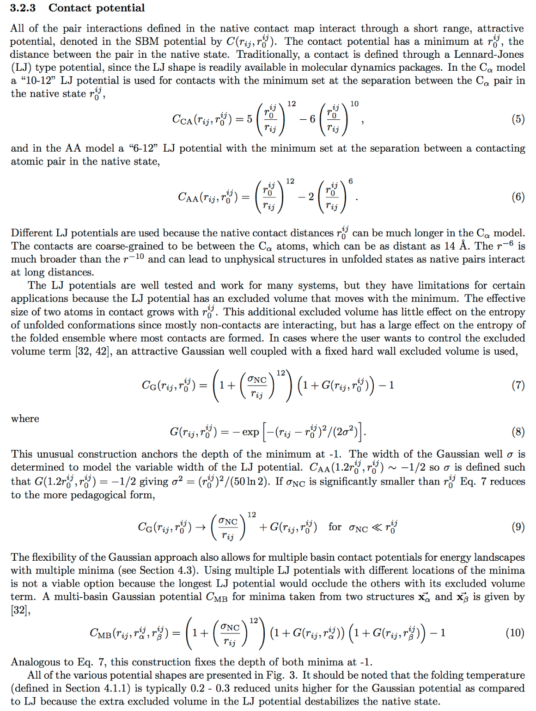

Gaussian contact potentials
Bringing freedom of creativity to the SMOG modeller!
Download
A tarball is available here. The extension is added to GROMACS v4.5.4. Compile GROMACS as you would any distribution, nothing special is required at compile time. This provides three new non-bonded pair interactions that can be included in the[ pairs ]section of the topology (.top). README.SBM in the root directory has helpful information that is reproduced below. A script that will convert a[ pairs ]section between Lennard-Jones and Gaussians in the all-atom model is available here. The width parameter (sigma) for Calpha models is typically a constant 0.5 Å, regardless of the native distance.Here is an excerpt from a book chapter (Springer book) on the contact potentials in SMOG which will introduce the Gaussians.

Example topology
Excerpt of topology ***************
[ pairs ]
;normal LJ 6-12 pairs
4 497 1 6.7105667E-02 1.4373939E-03
5 183 1 8.8991727E-02 1.6851818E-03
5 338 1 1.5051600E-02 1.2052582E-04
5 339 1 1.2527527E-02 8.3485455E-05
6 183 1 5.7529955E-02 7.0429500E-04
; ....
;standalone Gaussian well
1 316 5 0.818992 0.279187 0.0474239
; ...
;Gaussian well with connected a/r^12 repulsive core
;(must be used with [ exclusions ])
1 316 6 0.818992 0.279187 0.0474239 0.59605E-09
; ...
;dual basin Gaussian with connected a/r^12 repulsive core
;(must be used with [ exclusions ])
1 316 7 0.819006 0.279187 0.0474239 0.426216 0.072399 0.59605E-09
; ...
*****************************************************
Single Gaussian contact potential

From README.SBM:bare Gaussian potential:
V_ij = -A exp( - ( r - mu )^2 / ( 2 sigma^2 ) )
selected in the [ pairs ] section;
; i j ftype A mu sigma
with ftype = 5
note that the amplitude of the Gaussian is -A.
This can be used with a separate repulsion term or without it.
----------------------------------------------
combined Gaussian - r^-12 potential:
V_ij = A({ 1 + (1/A)a/(r^12) }{ 1 - exp[ - ( r - mu )^2 / ( 2 sigma^2 ) ] }-1)
= A({ 1 + R/A }{ 1 - G } - 1)
= R - AG - RG
this construction keeps the minimum of V fixed at ( mu, -A )
selected in the [ pairs ] section of the .top file
; i j ftype A mu sigma a
with ftype = 6
note that the amplitude of the Gaussian is -A.
IMPORTANT: the term R (and its derivative) now IS calculated here, the separate repulsion defined in [ atomtypes ] should be removed for each pair using this potential by [ exclusions ] :
; i j
note that the section [ bonds ] must appear before [ exclusions ] (as of 3.3)
Double well Gaussian contact potential

From README.SBM:two Gaussians & r^-12 repulsion:
V_ij = A[ (1+R/A) (1-F) (1-G) - 1]
= R - AF - AG + AFG - FR - GR + FGR
F = exp( - ( r - mu1 )^2 / ( 2 sigma1^2 ) )
G = exp( - ( r - mu2 )^2 / ( 2 sigma2^2 ) )
R = a/(r^12)
selected in the [ pairs ] section;
; i j ftype A mu1 sigma1 mu2 sigma2 a
with ftype = 7
both Gaussians get the common amplitude -A, minima of the resulting function are (mu1,-A) & (mu2,-A) as for the single Gaussian, [ exclusions ] are required
Page created on 4/30/11.
This resource is provided by the Center for Theoretical Biological Physics.
Please direct questions and comments to info@smog-server.org.
Page created and maintained by Jeff Noel and Paul Whitford